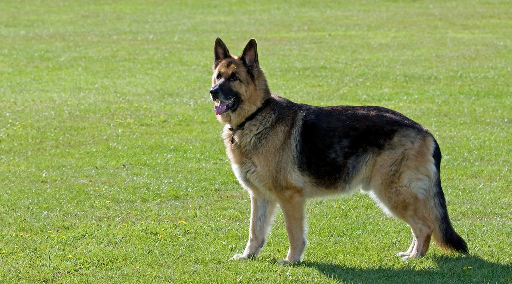

The relation between the human and the dog has existed 40,000 years ago. It started when humanity began to hunt. There are thousands of years of relations. That’s why today a dog can be very attached to a human.
The origin of the dog started from the divergence with wolves. Scientists agree that 15,000 to 40,000 years ago, humans started to breed dogs. They wanted them to fulfill a need of protection and hunting teammate.
Scientific evidence supposes that the first dogs were grey wolves. And after several years of selected breeding, we have a lot of breeds' dog in the world. At the beginning, wolves where selected for their obedience and their hunt ability. But the usage of dogs in our society has changed a lot of times. That's why we have a lot of varieties of dogs. Some breeders tried to change the appearance or the performances of their dog.
Examples of dog breeds
The origin of dogs is very hard to know for scientists. For example, there is no proof about the origin of chihuahua but it comes from Mexico from the 9th century and is thought to descend from the techichi.
Max Emil Friedrich von Stephanitz is the founder of german shepherd dog breed. He wanted a specific dog to lead a sheep herd and other skills (intelligence, speed, strength). After several tries, here is the result:
 A techichi on the left and a chihuahua on the right